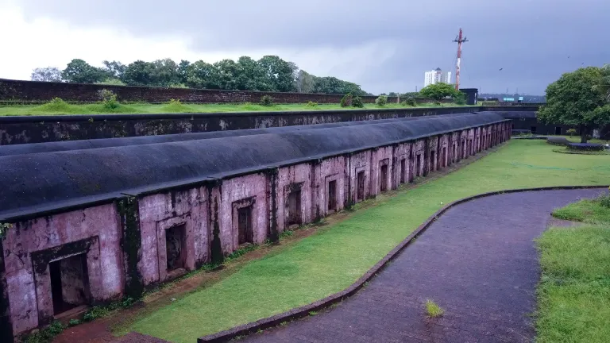
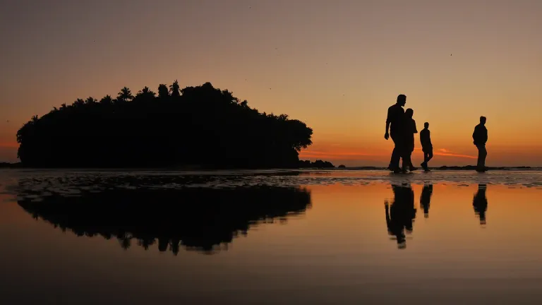
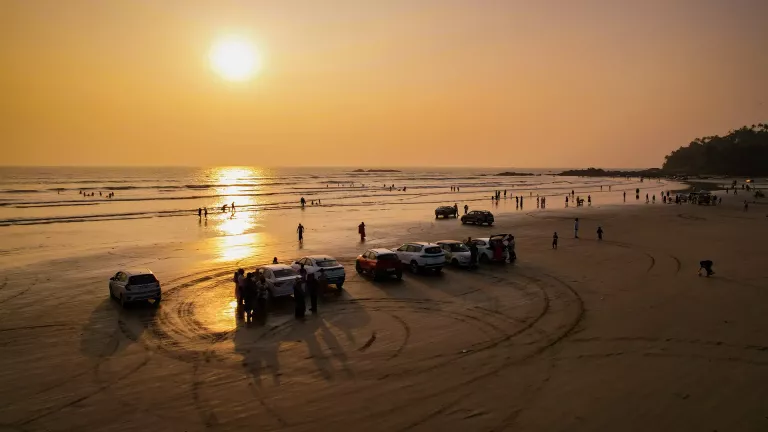
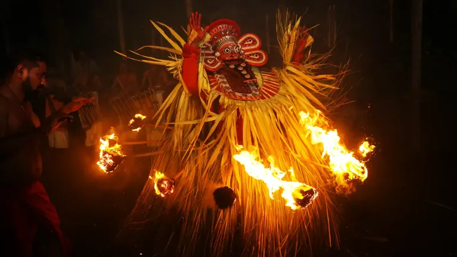

Coastal Heritage
St. Angelo Fort
Walk through a triangular laterite fort first built by the Portuguese in 1505, with broad views towards the Arabian Sea and Mappila Bay.

Theyyam traditions, sea-facing forts, long beaches, handloom heritage and a distinct North Malabar character.
Kannur brings ritual art, maritime history and quiet coastal landscapes into one compact region. The city is well connected by rail and air, while nearby Thalassery, Muzhappilangad and village shrines make it rewarding to explore beyond the centre.

Walk through a triangular laterite fort first built by the Portuguese in 1505, with broad views towards the Arabian Sea and Mappila Bay.

Enjoy the long shoreline south of Kannur. Driving and water conditions can change, so follow local restrictions and safety instructions on arrival.

Attend respectfully at a local kavu during the seasonal calendar. Confirm dates locally, follow shrine customs and avoid treating the ritual as a staged show.
Kannur was linked to the ancient Chera realm and later became a centre of the Kolathiri rulers. Portuguese, Dutch and British interests left a visible coastal legacy, while the Arakkal royal family and the region's Theyyam traditions preserve other important strands of North Malabar history.
Official Kannur guideKannur is a useful cultural stop between Kozhikode and Valiyaparamba or Bekal. Add an extra night if a verified Theyyam performance, Thalassery visit or relaxed beach evening matters to you.